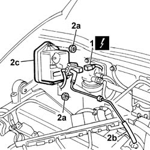
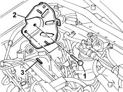
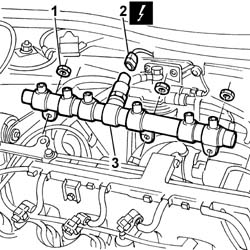
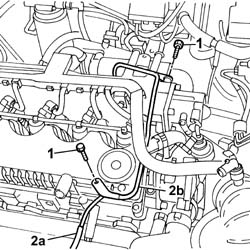
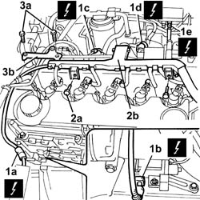
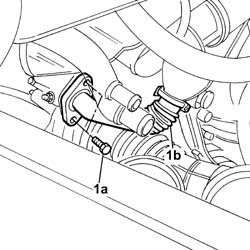
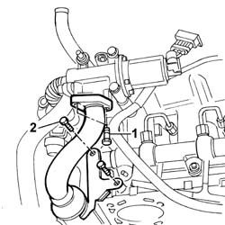
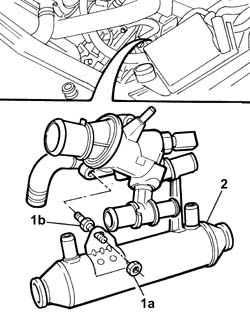
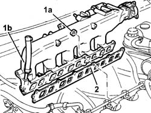

1072B10 INTAKE MANIFOLD - R.R. and Replace gasket
- Path
- Procedures > 10 ENGINE > 1072 inlet and exhaust manifolds > 1072B inlet manifolds > 1072B10 INTAKE MANIFOLD - R.R. and Replace gasket
- Kind
- repair procedure (removal / refitting; the operation number is the code)
- Applies to
- engines: 2.4 JTD 10V; all production periods
- Interactive page
- https://sloeber94.github.io/elrnDB-lThss/en/#/75966
Applies to: all engines; all production periods
 Removing
Removing
 Refitting
Refitting- Position the vehicle on a lift.
- Open the boot and disconnect the negative battery terminal.
See in Op. 1016A10
See in Op. 7055B54 PROTECTION/GUARD under engine - R.R.
See in Op. 4450B04 Right FRONT WHEEL (one) - R.R.
See in Op. 7055B42 FRONT WHEEL ARCH LINER (one), left or right - R.R.
See in Op. 7055B64 Engine compartment DUST SEAL in front wheel arch (one), left or right - R.R.
See in Op. 1092G10
See in Op. 1032D12
See in Op. 1032B10
See in Op. 1060E30
See in Op. 1060F20
See in Op. 1060F36
See in Op. 1060F30
See in Op. 1060E10
See in Op. 1048A21
1. Disconnect the electrical connection for the throttle casing pneumatic solenoid valve.
2. Undo the fixing nuts (2a), disconnect the pipe connecting the pneumatic valve vacuum reservoir (2b) and remove the vacuum reservoir (2c).
 | Description | Connector |
|---|---|---|
1 | Throttle body solenoid valve | L062 |

Applies to: all engines; all production periods
1. Undo the fixing bolts.
2. Remove the vacuum reservoir mounting bracket.
3. Remove the stud fixing the pressure pump to the pressure pump mounting.

Applies to: all engines; all production periods
1. Undo the fixing nuts.
2. Disconnect the electrical connection for the fuel pressure sensor.
| Description | Connector |
|---|---|---|
2 | Fuel pressure sensor | K083 |
3. Remove the single fuel manifold pipe.

Applies to: all engines; all production periods
1. Undo the fixing bolts.
2. Disconnect the flexible pipe (2a) from the turbocharger vanes actuator solenoid valve, then remove the rigid section (2b) of the pipe connecting the vacuum reservoir and solenoid valve.

Applies to: all engines; all production periods
1. Disconnect the electrical connections (1a), (1b), (1c), (1d) and (1e).
| Description | Connector |
|---|---|---|
1a | Air conditioning compressor engagement electro-magnet | L020 |
| Description | Connector |
|---|---|---|
1b | Turbocharger vane solenoid valve | L036 |
| Description | Connector |
|---|---|---|
1c | Supercharging sensor | K082 |
| Description | Connector |
|---|---|---|
1d | EGR solenoid valve | L030 |
| Description | Connector |
|---|---|---|
1e | Heater plugs control unit | M015A |
| Description | Connector |
|---|---|---|
1e | Heater plugs control unit | M015B |
| Description | Connector |
|---|---|---|
1e | Heater plugs control unit | M015C |
2. Undo the fixing bolts (2a) and remove the injection wiring (2b) from the work area.
3. Undo the bolts (3a) and remove the bracket connecting the intake manifold and the pressure pump mounting (3b).

Applies to: all engines; all production periods
1. Undo the bolts (1a) fixing the EGR supply pipe (1b) to the exhaust pipe.

Applies to: all engines; all production periods
1. Undo the bolts fixing the exhaust gas supply to the EGR solenoid valve.
2. Undo the bolts fixing the exhaust gas supply pipe mounting bracket to the cylinder head.

Applies to: all engines; all production periods
1. Undo the nut (1a) fixing the exhaust gas supply pipe to the thermostat stud (1b).
2. Move the exhaust gas supply pipe away from the housing in order to facilitate the subsequent removal of the intake manifold.

Applies to: all engines; all production periods
1. Undo the fixing nuts (1a) and remove the intake manifold (1b) from the cylinder head.
2. Remove the intake manifold gasket from the studs.

Applies to: all engines; all production periods
Refitting
Removing- Fit the new intake manifold gasket on the cylinder head studs.
- Fit the intake manifold in the housing on the cylinder head.
- Tighten the nuts fixing the intake manifold to the cylinder head.
 | Value - daNm | Fastening | Component | Ø |
|---|---|---|---|---|
. | 2.5 | Nuts | EXHAUST MANIFOLD/S | M8 |
- Position the exhaust gas supply pipe to the EGR in the housing.
- Tighten the bolts fixing the front section of the exhaust gas supply pipe to the exhaust manifold.
| Value - daNm | Fastening | Component | Ø |
|---|---|---|---|---|
. | 2.5 | Bolt | EGR VALVE PIPE | M8 |
- Tighten the bolts fixing the rear section of the exhaust gas supply pipe to the EGR valve.
| Value - daNm | Fastening | Component | Ø |
|---|---|---|---|---|
. | 2.5 | Bolt | EGR VALVE PIPE | M8 |
- Tighten the bolts fixing the exhaust gas supply pipe bracket to the cylinder head.
- Fit the bracket connecting the intake manifold to the pressure pump mounting.
- Position the injection wiring and connect the electrical connections disconnected previously.
| Description | Connector |
|---|---|---|
. | Heater plugs control unit | M015A |
| Description | Connector |
|---|---|---|
. | EGR solenoid valve | L030 |
| Description | Connector |
|---|---|---|
. | Supercharging sensor | K082 |
| Description | Connector |
|---|---|---|
. | Turbocharger vane solenoid valve | L036 |
| Description | Connector |
|---|---|---|
. | Air conditioning compressor engagement electro-magnet | L020 |
| Description | Connector |
|---|---|---|
. | Heater plugs control unit | M015B |
| Description | Connector |
|---|---|---|
. | Heater plugs control unit | M015C |
- Fit the rigid section of the ipe connecting the solenoid valve to the vacuum reservoir and secure it using the bolts.
- Connect the flexible section of the turbocharger vacuum pipe to the rigid pipe.
- Position the single fuel manifold in the special housing on the intake manifold.
- Tighten the nuts fixing the fuel manifold to torque.
| Value - daNm | Fastening | Component | Ø |
|---|---|---|---|---|
. | 2.5 | Nut | INJECTOR FUEL MANIFOLD (DIESEL) | M8 |
- Connect the electrical connection for the fuel pressure sensor.
| Description | Connector |
|---|---|---|
. | Fuel pressure sensor | K083 |
- Fit the vacuum reservoir mounting bracket.
- Tighten the stud fixing the pressure pump in the special housing.
- Fit the vacuum reservoir on the mounting and tighten the fixing bolts.
- Connect the connecting pipes to the pneumatic valve.
- Connect the electrical connection for the solenoid valve.
| Description | Connector |
|---|---|---|
. | Throttle body solenoid valve | L062 |
See in Op. 1048A21
See in Op. 1060E10
See in Op. 1060F30
See in Op. 1060F36
See in Op. 1060F20
See in Op. 1060E30
See in Op. 1032B10
See in Op. 1032D12
See in Op. 1092G10
See in Op. 7055B64 Engine compartment DUST SEAL in front wheel arch (one), left or right - R.R.
See in Op. 7055B42 FRONT WHEEL ARCH LINER (one), left or right - R.R.
See in Op. 4450B04 Right FRONT WHEEL (one) - R.R.
See in Op. 7055B54 PROTECTION/GUARD under engine - R.R.
See in Op. 1016A10
- Open the boot and connect the negative battery terminal.
- Remove the vehicle from the lift.